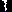

Wolfsschlucht Echternach
Useful Information
| Location: |
Near Echternach.
Parking Trooskneppchen, 6496 Echternach. 1 km, 20 minutes walk. (49.815650, 6.402420) |
| Open: |
no restrictions. [2022] |
| Fee: |
free. [2022] |
| Classification: |
 Gorge Fracture Cave, Fracture Cave,
 Wolfsschlucht Wolfsschlucht
|
| Light: | n/a |
| Dimension: | |
| Guided tours: | self guided |
| Photography: | allowed |
| Accessibility: | no |
| Bibliography: | J. A. Massard (1995): Wolfsschlucht und Wolfsgeschichten: Wölfe im Kanton Echternach In: Annuaire de la Ville d’Echternach. Band 1994, 1995, S. 239–272. pdf |
| Address: | Wolfsschlucht Echternach. |
| As far as we know this information was accurate when it was published (see years in brackets), but may have changed since then. Please check rates and details directly with the companies in question if you need more recent info. |
|
History
| 1881 | developed for tourism. |
Description
Wolfsschlucht, Wollefsschlucht or Gorges du Loup is a set of tectonic gorges in sandstone. It is located north of Echternach, at the sandstone escarpment above the Sauer or Sure river. Countless steps lead up the gorge. At the top of the gorge, there is a small bridge spanning the gorge, leading to a rocky outcrop with a view. The hiking trail from the “Trooskneppchen” viewing pavilion to the Äsbach Valley crosses through the gorge. This is one of the most spectacular natural landmarks of the Kleine Luxemburger Schweiz (Little Switzerland of Luxembourg). This area, also known as Region Müllerthal or simply Müllerthal, which has numerous strange rock formations, gorges, rivers and caves in the area between Echternach and the Müllerthal.
At the entrance stands a tall, obelisk-like rock known as (Cleopatra’s Needle). The following gorge has vertical and quite straight walls with a height of 40 to 50 m. That’s the result of the way it was formed: the rocks at the edge of the plaeau are rather hard, forming a sort of table. There are softer rocks below, with high content of clay. Those are eroded faster that the hard rock, but now the hard rocks lose their basement, they move downward and outward, and thin cracks in the rock open up forming gorges. The result is typically parallel to the valley, straight, with straight walls.
This site has little history, because it was more or less inaccessible until it was discovered for early tourism and developed with hiking trails in 1881. At this time it was known as Däiwelsschoart (Teufelsscharte, Devil's Notch), a name which is now used for a narrow crack at the end of the gorge, which leads to a 40 m long cave. The new name was given by a visitor from Trier, who enthusiastically compared it to the Wolf’s Glen from Carl Maria von Weber’s opera Der Freischütz. We guess the marketing guys of that time found a name with a mistyrious wolf better than the evil devil. Nevertheless, there is a local legend, that it was named after the last wolf which was shot in Luxembourg in April 1893.
A treasure is hidden in the gorge which is guarded by a black dog with sparkling eyes. The dog is an enchanted count who is said to have sold his soul to the devil in order to possess even more gold and silver, and was thus transformed into a dog. If a child throws a rosary into the crevice, they can not only redeem the count but also claim the treasure. Two boys from Echternach, who knew the legend, saw the chest through the crevice, but did not have a blessed rosary with them. They rushed home to fetch one, but by the time they returned, everything had vanished.
 Search DuckDuckGo for "Wolfsschlucht Echternach"
Search DuckDuckGo for "Wolfsschlucht Echternach" Google Earth Placemark
Google Earth Placemark OpenStreetMap
OpenStreetMap Wolfsschlucht (Echternach) - Wikipedia (visited: 25-APR-2026)
Wolfsschlucht (Echternach) - Wikipedia (visited: 25-APR-2026) Felsformation Wollefsschlucht (visited: 25-APR-2026)
Felsformation Wollefsschlucht (visited: 25-APR-2026) Index
Index Hierarchical
Hierarchical Countries
Countries Maps
Maps